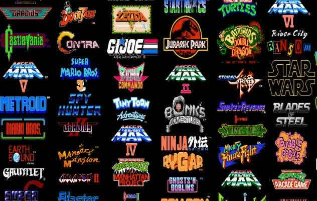
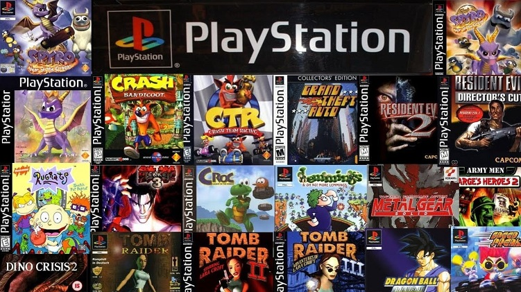

Pack de ROMs part 1

Um pacote com CENTENAS de jogos, dos clássicos e títulos raros:
Gameboy (advanced e color também), sega32, MAME, NES e SNES.
Estou atualizando os packs adicionando cada vez mais jogos, eles são compatíveis com emuladores populares.
Estou atualizando constantemente esse pack e os outros, volte e fique a vontade para rebaixar de tempos em tempos. Vou deixar aqui em qual versão está.
V1.0
Baixar Pack de ROMs part 1Pack de ROMs part 2

Um pacote com dezenas de jogos, títulos incríveis de PLAYSTATION 1. Compatível com emuladores populares.
Estou atualizando constantemente esse pack e os outros, volte e fique a vontade para rebaixar de tempos em tempos. Vou deixar aqui em qual versão está.